Nell'app trovi gli allenamenti di ogni giorno con le isole nell'ordine del tuo gruppo, le foto degli esercizi, il programma, le schede PDF, il tuo programma personale e i tuoi test. A ogni seduta segni la presenza.
Apri l'app →Apri il link dell'app dal telefono:
rcafadriatico.github.io/Allenamenti-Montefeltro-APP
Così la trovi tra le app, con il logo della Montefeltro.
Nella scheda Chi sei scrivi il tuo username e, se l'allenatore te l'ha dato, il PIN. Poi premi Entra. Lo fai una volta sola: il telefono si ricorda di te.
Username e PIN te li dà l'allenatore. Non darli a nessuno: servono a segnare la presenza e a vedere il tuo programma e i tuoi test.
Sotto il riquadro trovi due pulsanti: 📄 Programma di allenamento (il programma della stagione in PDF) e ❓ Come si usa l'app (questa guida).
Se compare in rosso «Rientra con username e PIN», l'allenatore ha cambiato il PIN: scrivi quello nuovo.
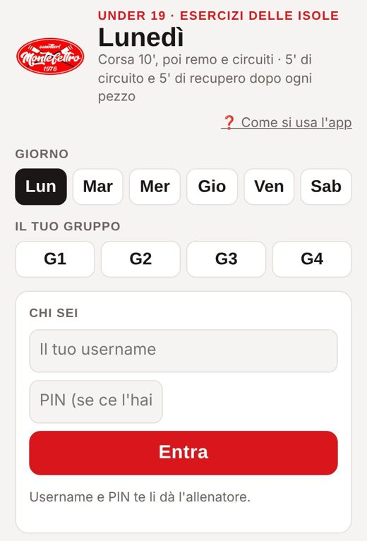
In alto tocca il giorno (di solito è già quello di oggi) e il tuo gruppo, da G1 a G4. Il telefono si ricorda il gruppo.
Se fai 4 sedute a settimana, martedì e giovedì per te sono in grigio: niente seduta.
Sotto il nome del giorno c'è la descrizione della seduta. Se l'allenatore ha scelto un allenamento diverso dal solito, all'inizio vedi un'etichetta: [Remo], [Circuito] o [Pesi]. Può essere diverso anche solo per la tua età: l'app lo sa dal tuo anno di nascita.
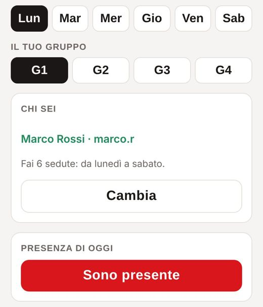
Quando arrivi in palestra premi Sono presente, una volta per seduta, anche se non hai ancora scelto il gruppo. Compare l'ora in cui l'hai segnata.
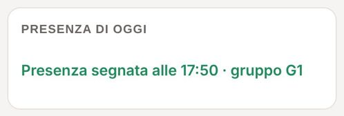
La pianta mostra dove sono le isole in palestra. Sotto trovi le isole nell'ordine in cui le fa il tuo gruppo:
Se c'è, il riquadro nero Tabata ti dice cosa impostare nell'app Tabata: è uguale per tutti.
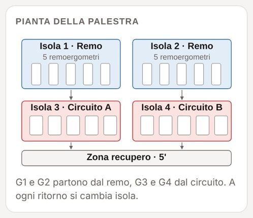
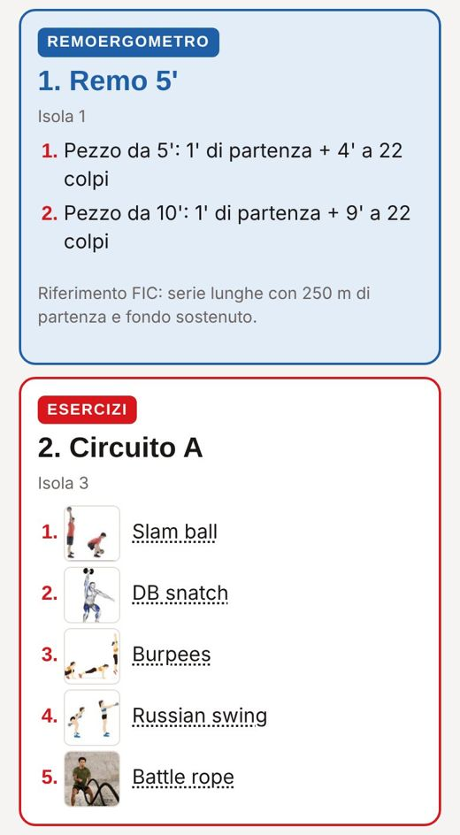
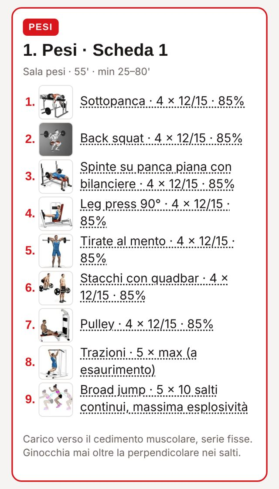
Tocca il nome o la foto di un esercizio: si apre la scheda con la foto grande e, quando ci sono, la spiegazione e i pesi indicativi (M = maschi, W = femmine).
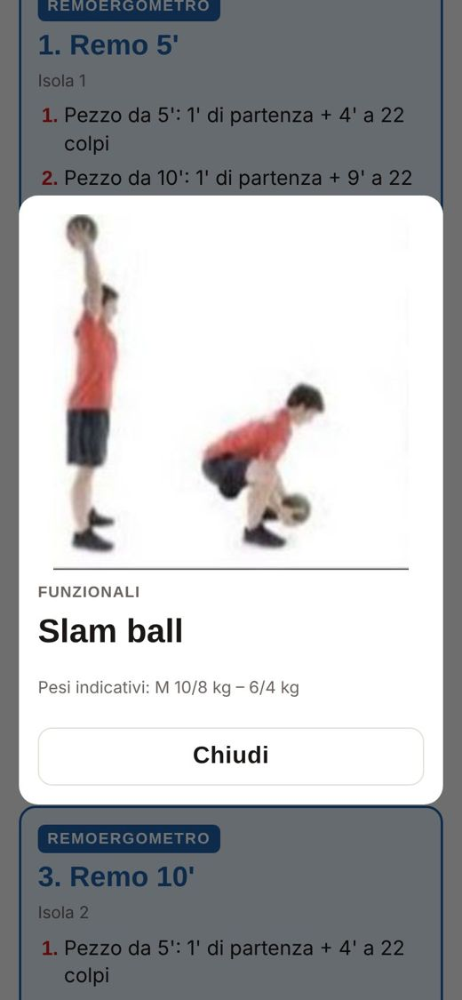
Alcuni giorni, dopo le isole, c'è un riquadro In aggiunta con un altro lavoro, per esempio il mercoledì «Pesi + remoergometro».
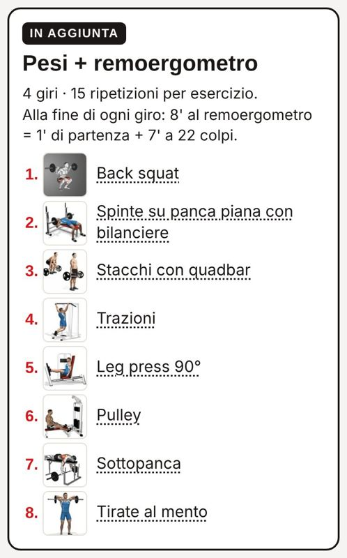
Se l'allenatore ti prepara degli allenamenti solo per te, li trovi nel riquadro blu Il tuo programma personale, sotto la presenza. Li vedi solo tu.
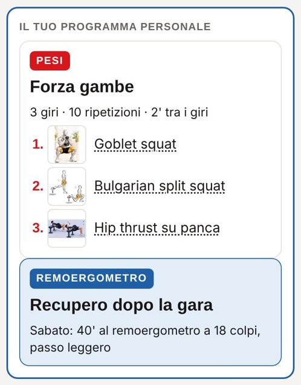
Apri I miei test per inserire i tuoi test: 500, 1000, 1500 e 2000 m al remoergometro e 4000 m bike.
In alto vedi il tuo miglior tempo per ogni test, con il passo /500. Sotto c'è la cronologia: ogni test con la differenza rispetto al precedente (verde se sei migliorato).
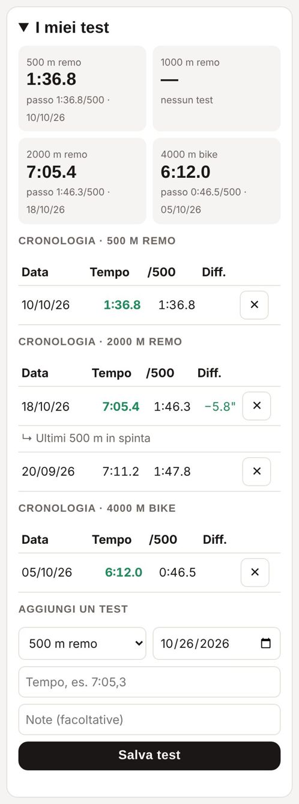
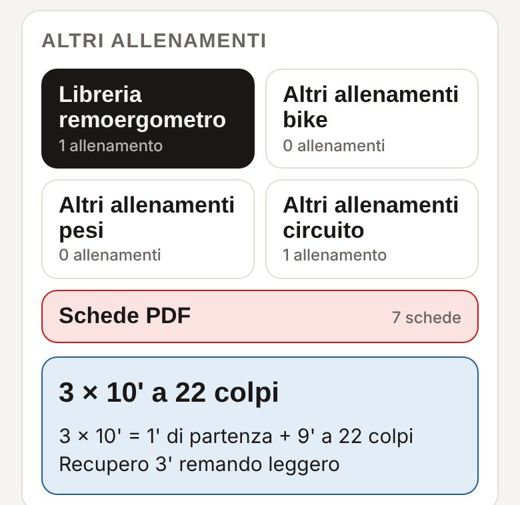
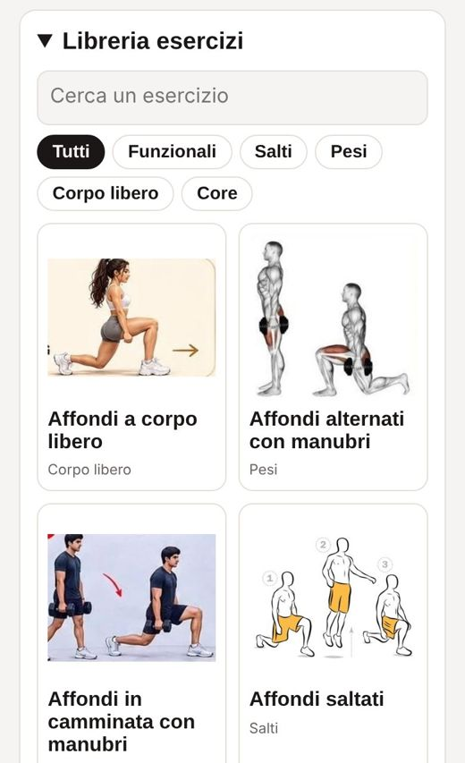